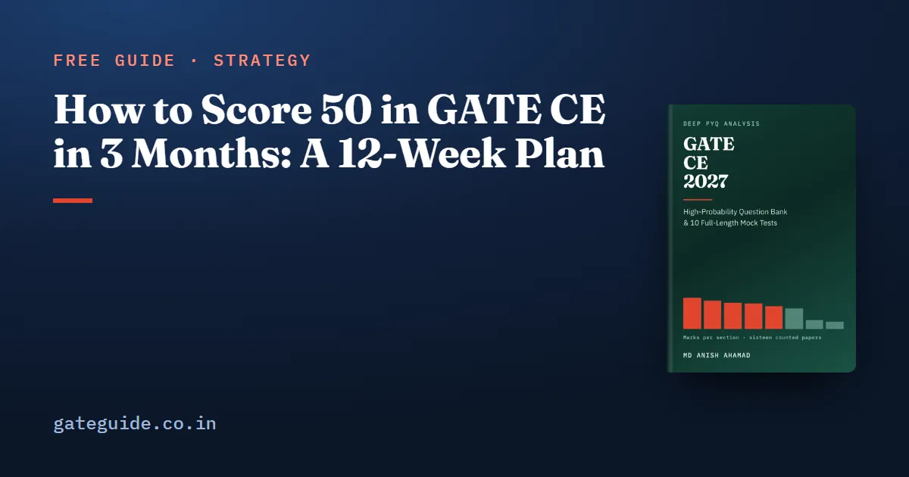

How to Score 50 in GATE CE in 3 Months: A 12-Week Plan

To score 50 in GATE CE in three months, you do not need every section of the paper, but you need most of them at better than half. Fifty is half of the 100 marks. The honest way to plan for it is to write down where those fifty marks would come from, section by section, and then build twelve weeks around that table.
In this guide
The table below uses the counted marks from all sixteen GATE Civil papers from 2019 to 2026, Set 1 and Set 2 in every year. The share of each section you aim to bank is the author's judgement, and it is labelled as one. Fifty is a target, not a promise.
Key takeaways
- The paper is 65 questions and 100 marks: 30 at one mark, 35 at two, General Aptitude at exactly 15 in all sixteen counted papers.
- Banking about 70 per cent of General Aptitude and half to 60 per cent of each large section adds up to about 55 marks on the counted means.
- That leaves a margin of under five marks. The range of each section, not its mean, decides whether you keep it.
- Weeks 1 to 8 learn the sections in the order the marks are in, with Engineering Mathematics running as a daily second track. Weeks 9 to 12 are full papers.
- Skip the 25 counted marks the 2027 syllabus no longer names. Read Transportation Planning, which is new.
What 50 marks means on this paper
Every counted Civil paper closes the same way: 65 questions, 100 marks, 30 questions at one mark and 35 at two, 15 marks of General Aptitude and 85 technical. Your raw marks are then turned into a GATE score, normalised across the sessions; the score calculation guide explains how.
Whether 50 marks clears the qualifying mark, or an institute's cutoff, depends on the year. The qualifying mark is published with the result, and admission cutoffs are set by each institute. Check the result notification rather than any figure quoted online.
The arithmetic behind a 50-mark target
The counted mean is what each section has carried across the sixteen papers. The target share is the fraction of that you aim to bank after negative marking, and it is judgement, set lower for large, broad sections and higher where the syllabus is compact.
| Section | Counted mean | Target share | Target marks |
|---|---|---|---|
| General Aptitude | 15.0 | 70% | 10.5 |
| Engineering Mathematics | 12.9 | 60% | 7.7 |
| Structural Engineering | 15.1 | 50% | 7.6 |
| Geotechnical Engineering | 13.8 | 55% | 7.6 |
| Water Resources Engineering | 12.6 | 50% | 6.3 |
| Environmental Engineering | 11.1 | 60% | 6.7 |
| Transportation Engineering | 10.0 | 50% | 5.0 |
| Geomatics Engineering | 4.4 | 40% | 1.8 |
| Construction Materials and Management | 3.5 | 40% | 1.4 |
| Total | 54.6 |
The counted means leave out the 1.6 marks a paper that fell on material the 2027 syllabus has dropped, so the sections above add to 98.4 rather than 100.
The margin is 4.6 marks, and the range eats it. Your paper will not deliver the means. Environmental has been as low as 8 marks, against a mean of 11.1; at a 60 per cent share that costs you 1.9 marks. Structural has been as low as 12; at 50 per cent that costs 1.6. Two sections falling badly for you in the same paper takes most of the margin. The GATE CE subject-wise weightage guide prints every section's lowest and highest paper.
The shares are net of penalties. A wrong one-mark MCQ costs a third of a mark and a wrong two-mark MCQ two-thirds; MSQ and NAT carry no penalty. Three wrong two-mark MCQs erase two marks. The counted papers held between 28 and 40 MCQs each, so your guessing policy matters. The marking scheme guide sets out the rules, which are common to every GATE paper even though its title says CSE.
The 12-week plan
Judgement: the allocation is the author's, reasoned from the table above. Each learning week has a main block and a short daily block of Engineering Mathematics, because Mathematics rewards breadth, and six topics over eight weeks is easier than six topics in one.
| Week | Main block | Daily Mathematics block |
|---|---|---|
| 1–2 | Structural Engineering | Calculus |
| 3–4 | Geotechnical Engineering | Linear Algebra, then Numerical Methods |
| 5 | Water Resources Engineering | Ordinary Differential Equations |
| 6 | Environmental Engineering | Probability and Statistics, including the new pmf, pdf and cdf wording |
| 7 | Transportation Engineering, including Transportation Planning | Partial Differential Equations |
| 8 | Geomatics and Construction, one evening each; the new 2027 phrases | Mixed revision |
| 9–11 | Two full papers a week, each followed by an evening of diagnosis | Error log |
| 12 | One paper early in the week, formula sheet, error log | None |
General Aptitude gets one fixed hour every week from week one, not the gaps between subjects. It is the only block of the paper that never varied, and it carries 10.5 of the 54.6 target marks. The General Aptitude preparation guide covers what its ten questions test.
Inside each section, heaviest topics first
Two weeks per large section is not enough to read a textbook cover to cover. Work each section's topics in the order of their counted marks across the sixteen papers.
- Structural Engineering (241 counted marks): Structural Analysis and energy methods 86, Solid Mechanics 59, Steel Structures 41, Concrete Structures 37, Engineering Mechanics 18. The first two hold 145 of the 241.
- Geotechnical Engineering (221): the marks are spread over twelve topics. The heaviest are shear strength and stress paths 29, settlement and consolidation 28, index properties and classification 26, and shallow foundations and bearing capacity 25. Breadth matters more here than anywhere except Mathematics.
- Water Resources Engineering (202): Hydraulics 61, Hydrology 58, Fluid Mechanics 52, Irrigation 31.
- Environmental Engineering (177): Water and Waste Water Quality and Treatment alone holds 123. Air Pollution has 32 and Municipal Solid Wastes 22.
- Transportation Engineering (160): Traffic Engineering 62, Transportation Infrastructure 56, Highway Pavements 42.
Transportation Planning, the four-step travel demand model, has drawn zero marks in all 1,040 counted questions, because it was not on the syllabus before 2027. There is no pattern to practise. Read it in week seven from the syllabus line and a standard text.
What three months does not need
The 25 counted marks on deleted material. Prestressed concrete carried 14 marks across seven papers, free vibration of an undamped single-degree-of-freedom system 8, dynamic pile formulae 2 and remote sensing and GIS 1. The 2027 syllabus names none of them. When you meet them in an old paper, strike them out and move on.
Depth in Geomatics. Its 2027 syllabus was rewritten rather than adjusted, so past Geomatics questions are the weakest guide to future ones anywhere in the paper. Read the syllabus first, then its two heaviest counted topics, traversing and triangulation (25) and levelling (23).
What three months does need is the habit of skipping nothing on the strength of a low count. A topic's year-count depends partly on how questions are filed, and a thin count is weak evidence of anything.
Weeks nine to twelve: test the table
Score every full paper section by section and set it against the target column above. A section persistently below its target share needs time moved to it from a section above target; the total alone will not tell you which. Classify every lost mark as a misread, a wrong formula, an arithmetic slip or not known, because only the last needs more reading.
If your section scores sit at or above the target shares by week eleven, the plan is working. If they do not, lower the share for your weakest large section, raise it for General Aptitude and Environmental, and recompute. The table is a tool to adjust, not a forecast.
Confirm your paper's session in the GATE 2027 exam dates guide and on the official GATE 2027 website, and check the current notification before you fix your twelve weeks. GATE Guide is independent and is not affiliated with IIT Madras, IISc or GATE.
This guide gives the arithmetic and the order. The GATE CE 2027 book prints the full topic tables, a hundred-question priority list whose quota follows the section weights, and 924 questions with worked solutions, 650 of them in 10 full mock tests for weeks nine to twelve.
Frequently asked questions
Is it possible to score 50 in GATE CE in 3 months?
It is a reasonable target for a candidate who studies steadily for twelve weeks, but no plan can promise it. The arithmetic in this guide reaches about 55 marks if you bank half to 60 per cent of each large section and 70 per cent of General Aptitude. That leaves a margin of under five marks for a paper that falls badly for you.
Is 50 marks a good score in GATE CE?
It depends on the year, the qualifying mark and what you want the score for. The qualifying mark for Civil is published with each year's result and admission cutoffs are set by each institute, so check the result notification rather than any number quoted online. Your raw marks are also converted into a normalised GATE score across the two sessions.
Which subjects should I focus on to score 50 in GATE CE?
General Aptitude first, because it was exactly 15 marks in all sixteen counted papers. Then the four sections that averaged 12.6 marks or more: Structural, Geotechnical, Engineering Mathematics and Water Resources. Environmental and Transportation come next. Geomatics and Construction Materials and Management get one evening each, because their short syllabi make them cheap marks when they appear.
How many questions should I attempt to score 50 in GATE CE?
No count can answer that, because it depends on your accuracy. The target table in this guide banks about 55 marks after penalties, so you will need to attempt more than that, since not every attempt is right. Measure your accuracy by section in the mocks of weeks nine to twelve, and let that decide how far beyond 55 you go.
Can I skip Geomatics and Construction for a 50-mark target in GATE CE?
Not safely. Together they averaged 7.9 marks a paper across the sixteen counted papers, and Construction alone has run from 0 to 7. Both have short, largely factual syllabi, so an evening each buys more marks per hour than another evening in a large section. The 50-mark arithmetic here counts on about three marks from the pair.
Sources
- GATE 2027 official website (IIT Madras)
- GATE 2027 CE syllabus (IIT Madras)
- GATE past papers and answer keys archive (IIT Guwahati)
Dates, fees and the syllabus are set by the GATE 2027 organising institute and can change. Always confirm at gate2027.iitm.ac.in.